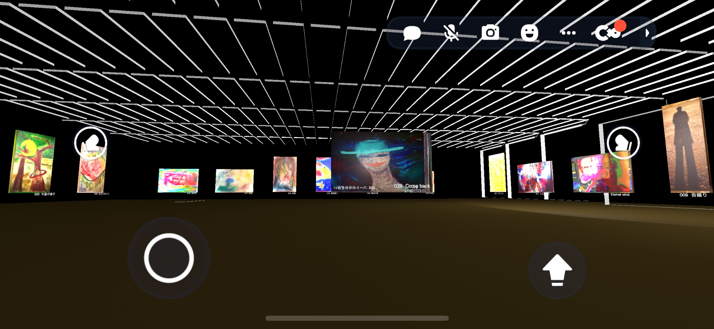
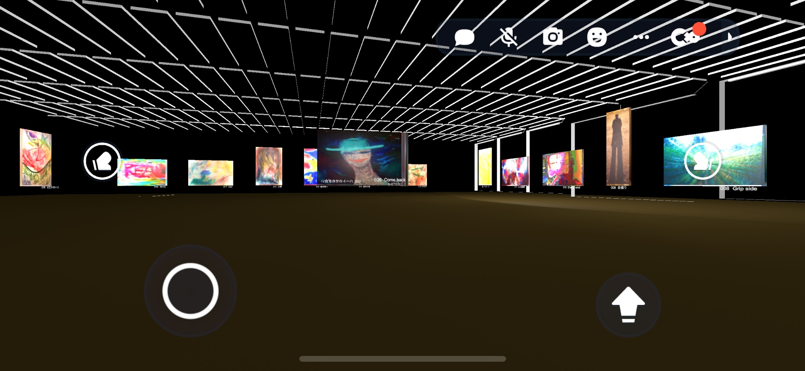
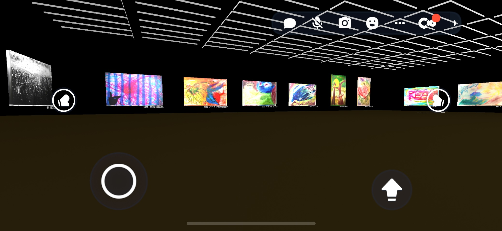
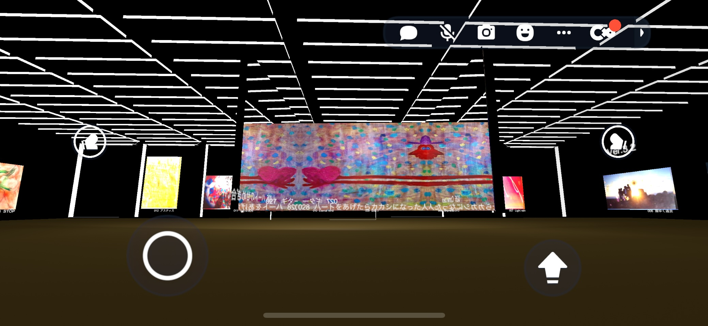
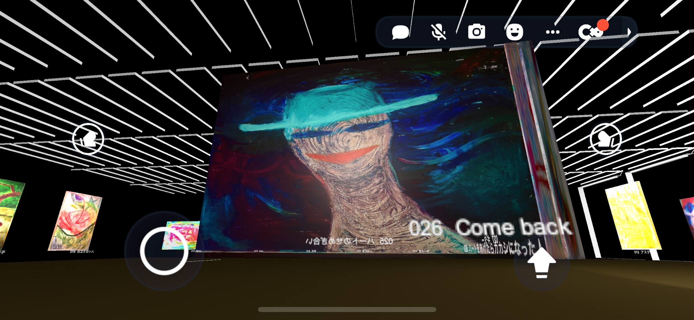

clusterで開く鈴木たかまさVR美術館
鈴木たかまさ（1977年生まれ）。芸術家、音楽家、サッカー家として1999年頃より活動。写真・油彩・パステルほか全28点を展示し、1999〜2022年の制作をアーカイブ。撮影は Canon EOS Kiss / Pentax K100。BGM は自身作曲の「時にはピアノのない子の様に」。
遊びの哲学とインタラクティブアート。
物語とシステムをつなぐプロジェクトを記録します。

clusterで開く鈴木たかまさ（1977年生まれ）。芸術家、音楽家、サッカー家として1999年頃より活動。写真・油彩・パステルほか全28点を展示し、1999〜2022年の制作をアーカイブ。撮影は Canon EOS Kiss / Pentax K100。BGM は自身作曲の「時にはピアノのない子の様に」。

空間全体が光のリングで繋がるエントランス。

青空の下に作品が漂う、静かな展示エリア。

夕暮れに染まる広場でコミュニティが集うシーン。

光の道が伸びるメインホールで新しい体験が始まります。